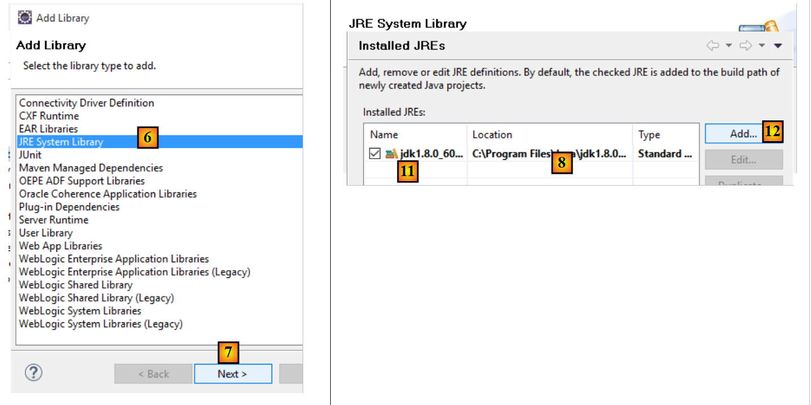
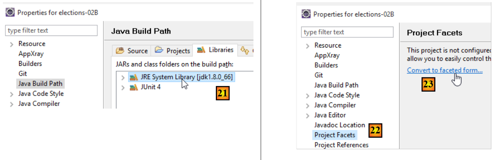
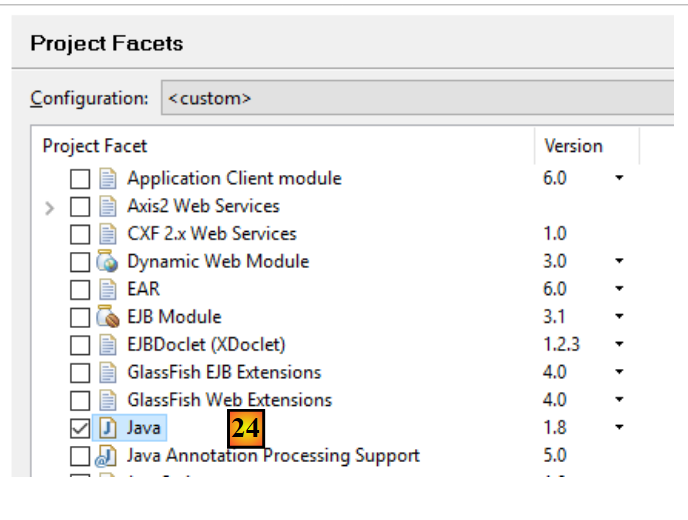
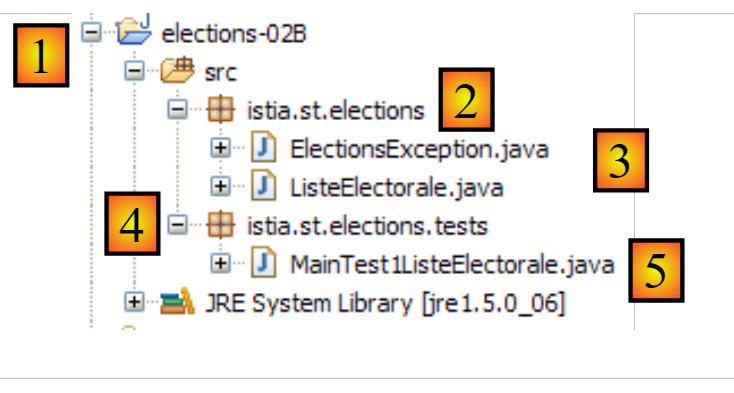
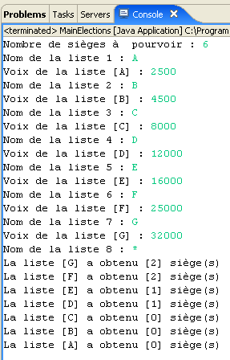

3. [TD]: الفئات
الكلمات الرئيسية: فئة، واجهة، وراثة، استثناء، تعدد الأشكال
قراءات موصى بها:
- الأقسام 2.1 و 2.2 و 2.4 و 2.7 من الفصل 2 من [ref1]: الفئات والواجهات
- الأقسام 3.3 (فئة String)، 3.5 (فئة ArrayList)، 3.6 (فئة Arrays)
في الجزء الأول من تمرين ELECTIONS، لم يتم استخدام أي فئات. قمنا ببناء حل كما كنا سنبنيه بلغة C. سنقدم الآن مفهوم فئات Java.
3.1. الدعم
 |  |
يحتوي المجلد [support / chap-03] على مشروع Eclipse الخاص بهذا الفصل.
سنعمل الآن مع JDK 1.8 لأن بعض المشاريع القادمة تتطلب هذا الإصدار من JDK. لتحديد إصدار JDK المستخدم، اتبع الخطوات التالية:
 |
 |
- في [4]، يتم استخدام JRE (بيئة تشغيل جافا). هذه JRE هي في الواقع JDK (مجموعة أدوات تطوير جافا) هنا، وتحديداً [jdk1.8.0_60]. إذا لم تكن JDK أو إذا كان لديك إصدار أقل من 1.8، فاتبع الخطوات التالية [5-21]؛
 |
- في [8]، JRE المستخدم حاليًا بشكل افتراضي بواسطة Eclipse؛
- في [11]، مختلف JDKs و JREs التي يتعرف عليها Eclipse حاليًا؛
 |
- في [15]، اختر JDK بدلاً من JRE. يستخدم هذا المستند مشاريع Maven التي تتطلب JDK؛
 |
 |
- في [21]، لدينا إصدار JDK >=1.8؛
- في [22-23]، قم بالوصول إلى جوانب المشروع (طرق عرض مختلفة لنفس مشروع Eclipse)؛
 |
- في [24]، تحقق من أنك تستخدم إصدار Java >=1.8؛
3.2. الفئة [ ListeElectorale]
في لغة C، كنا سنستخدم على الأرجح بنية لتمثيل قائمة المرشحين للانتخابات. وقد تبدو كما يلي:
مفهوم البنية غير موجود في لغة Java. يجب استبداله بمفهوم الفئة. لذلك قررنا إنشاء فئة لتخزين المعلومات المتعلقة بقائمة المرشحين. سيكون لهذه الفئة الهيكل التالي:
package istia.st.elections;
public class ListeElectorale {
/**
* identité de la liste
*/
private int id;
/**
* nom de la liste
*/
private String nom;
/**
* nombre de voix de la liste
*/
private int voix;
/**
* nombre de sièges de la liste
*/
private int sieges;
/**
* indique si la liste est éliminée ou non
*/
private boolean elimine;
/**
* constructeur par défaut
*/
public ListeElectorale() {
}
/**
*
* @param nom String : le nom de la liste
* @param voix int : son nombre de voix
* @param sieges int : son nombre de sieges
* @param elimine boolean : son état éliminé ou non
*/
public ListeElectorale(int id,String nom, int voix, int sieges, boolean elimine) {
...
}
/**
*
* @return int : l'identifiant de la liste
*/
public int getId() {
...
}
/**
* initialise l'identifiant de liste
* @param id int : identifiant de la liste
* @throws ElectionsException si id<1
*/
public void setId(int id) {
...
}
/**
*
* @return String : le nom de la liste
*/
public String getNom() {
...
}
/**
* initialise le nom de la liste
* @param nom String : nom de la liste
* @throws ElectionsException si le nom est vide ou blanc
*/
public void setNom(String nom) {
...
}
/**
*
* @return int : le nombre de voix de la liste
*/
public int getVoix() {
...
}
/**
* initialise le nombre de voix de la liste
* @param voix int : le nombre de voix de la liste
*/
public void setVoix(int voix) {
...
}
/**
*
* @return int : le nombre de sièges de la liste
*/
public int getSieges() {
...
}
/**
* fixe le nombre de sièges de la liste
* @param sieges int : le nombre de sièges de la liste
*/
public void setSieges(int sieges) {
...
}
/**
*
* @return boolean : valeur du champ elimine
*/
public boolean isElimine() {
...
}
/**
*
* @param sieges int
*/
public void setElimine(boolean elimine) {
...
}
/**
*
* @return String : identité de la liste électorale
*/
public String toString() {
...
}
}
- السطر 8: معرف فريد للقائمة. ليس ضروريًا هنا، ولكنه محجوز للاستخدام في المستقبل.
- السطر 13: اسم القائمة.
- السطر 17: عدد الأصوات التي حصلت عليها القائمة
- السطر 21: عدد المقاعد المخصصة للقائمة
- السطر 25: قيمة منطقية تشير إلى ما إذا كانت القائمة قد استبعدت (نسبة الأصوات التي حصلت عليها أقل من العتبة الانتخابية) أم لا.
يمكن تهيئة كل حقل خاص باسم [xyz] باستخدام طريقة باسم [setXyz]. تسترد طريقة [getXyz] قيمة الحقل الخاص [xyz]. في الحالة المحددة التي يكون فيها [xyz] حقلًا منطقيًا، يمكن استبدال طريقة [getXyz] بطريقة [isXyz]. تتبع التسمية المحددة لهذه الطرق معيار ترميز يسمى معيار JavaBean. وبالتالي، نحدد الطرق العامة التالية:
- getId (السطر 48)، setId (السطر 57)
- getName (السطر 65)، setName (السطر 74)
- getVoice (السطر 82)، setVoice (السطر 90)
- getSeats (السطر 98)، setSeats (السطر 106)
- isEliminated (السطر 114)، setEliminated (السطر 122)
- السطران 30-31: تعريف منشئ بدون معلمات. يتيح لك ذلك إنشاء كائن [VoterList] دون تهيئته. يمكن بعد ذلك تهيئته باستخدام طرق set.
- السطور 40-42: تعريف منشئ يقوم بإنشاء كائن [VoterList] مع تهيئة حقوله الخمسة الخاصة.
- الأسطر 130–132: تعريف طريقة [toString]، التي تُرجع سلسلة تحتوي على قيم الحقول الخمسة للكائن.
قد يبدو برنامج الاختبار لفئة [VoterList] كما يلي:
package istia.st.elections.tests;
import istia.st.elections.ListeElectorale;
public class MainTest1ListeElectorale {
public static void main(String[] args) {
// creation of an electoral list
ListeElectorale listeElectorale1 = new ListeElectorale(1, "A", 32000,
0, false);
// display identity list
System.out.println("listeElectorale1=" + listeElectorale1);
// change in number of seats
listeElectorale1.setSieges(2);
// display identity list 1
System.out.println("listeElectorale1=" + listeElectorale1);
// a new electoral roll
ListeElectorale listeElectorale2 = listeElectorale1;
// display identity list 2
System.out.println("listeElectorale2=" + listeElectorale2);
// change in number of seats
listeElectorale2.setSieges(3);
// display identity of the 2 lists
System.out.println("listeElectorale2=" + listeElectorale2);
System.out.println("listeElectorale1=" + listeElectorale1);
}
}
قد تكون بيئة Eclipse لهذا الاختبار كما يلي:
 |
- [1]: اسم المشروع هو [elections-02A]
- [2]: سيتم وضع التطبيق في حزمة، هنا [istia.st.elections]
- [3]: [VoterList.java] هو كود المصدر لفئة [VoterList]
- [4]: سيتم وضع فئات الاختبار في حزمة، هنا [istia.st.elections.tests]
- [5]: فئة الاختبار [MainTest1VoterList]
الشاشة التي تظهر بعد تشغيل البرنامج أعلاه هي كما يلي:

المهمة: باستخدام المعلومات المذكورة أعلاه، أكمل كود فئة VoterList.
3.3. إنشاء فئة استثناء [ElectionsException]
من بين فئات الاستثناءات المختلفة في لغة Java، هناك فئة تسمى [RuntimeException]. هذه الفئة مشتقة من فئة [Exception]، وهي جذر جميع فئات الاستثناءات. السمة المميزة لمثيلات [RuntimeException] أو المثيلات المشتقة منها هي أنه لا يلزمك إعلانها أو معالجتها. وتسمى هذه الاستثناءات بالاستثناءات غير الملتقطة.
لنلقِ نظرة على المثال الأول. فئة [BufferedReader] هي فئة تسمح لك مثيلاتها بقراءة أسطر النص من دفق البيانات. وتحتوي على طريقة [readLine] ذات التوقيع التالي:
يمكننا أن نرى أن الطريقة يمكن أن ترمي استثناء [IOException]. التسلسل الهرمي لهذه الفئة هو كما يلي:
تشتق فئة [IOException] من فئة [Exception] (السطر 3). يطلب منا المُجمِّع معالجة وإعلان الاستثناءات من النوع [java.lang.Exception] أو الأنواع المشتقة (باستثناء فرع [RuntimeException]، الذي سنناقشه لاحقًا). وبالتالي، لقراءة سطر من النص المكتوب على لوحة المفاتيح، يجب أن نكتب شيئًا مثل:
لنأخذ مثالاً آخر. لتحويل سلسلة إلى عدد صحيح، يمكننا استخدام الطريقة الثابتة [Integer.parseInt]، التي يكون توقيعها كما يلي:
الحجة [s] هي السلسلة المراد تحويلها إلى عدد صحيح. يمكننا أن نرى أن الطريقة يمكن أن ترمي استثناء [NumberFormatException]. التسلسل الهرمي لهذه الفئة هو كما يلي:
تتفرع فئة [NumberFormatException] من فئة [RuntimeException] (السطر 4). لا يشترط المُجمِّع أن نتعامل مع استثناءات من نوع [java.lang.RuntimeException] أو فئاتها الفرعية أو أن نعلن عنها. وبالتالي، يمكننا كتابة شيء مثل:
لسنا مطالبين بتضمين كتلة [try-catch] لمعالجة أي استثناء ناتج عن [Integer.parseInt] (السطر 9).
هناك مزايا وعيوب لإنشاء واستخدام فئات الاستثناءات المشتقة من [RuntimeException]:
- من الناحية الإيجابية: يكون الكود أكثر إيجازًا
- على الجانب السلبي: قد نلجأ في النهاية إلى أساليب على غرار لغة C حيث تُرجع كل دالة رمز خطأ — وهي ممارسة يستخدمها قلة من الناس، وذلك تحديدًا للحفاظ على خفة الكود. وعندما يحدث مثل هذا الخطأ غير المعالج، يتعطل البرنامج، وعادةً ما يكون ذلك بطريقة غير أنيقة.
لقد قررنا إنشاء فئة خاصة تجمع كل الاستثناءات التي قد تحدث في تطبيق ELECTIONS الخاص بنا. ستسمى [ElectionsException] وستكون مشتقة من فئة [RuntimeException]. وفيما يلي شفرة البرمجة الخاصة بها:
package istia.st.elections;
public class ElectionsException extends RuntimeException {
private static final long serialVersionUID = 1L;
public ElectionsException() {
super();
}
public ElectionsException(String message) {
super(message);
}
public ElectionsException(Throwable cause) {
super(cause);
}
public ElectionsException(String message, Throwable cause) {
super(message, cause);
}
}
- السطر 1: نضع الفئة في الحزمة [istia.st.elections]؛
- السطر 3: الفئة تمتد من [RuntimeException]. وبالتالي فهي غير محددة؛
- السطر 4: معرف تسلسل يمكننا تجاهله في الوقت الحالي؛
- في تطبيقنا، سنستخدم نوعين من المنشئات:
- المنشئ الكلاسيكي في الأسطر 15-17، كما هو موضح أدناه:
في هذه الحالة، يمكن للطريقة التي تستدعي طريقة ترمي مثل هذا الاستثناء أن تتعامل معها على النحو التالي:
// test exception
try {
listeElectorale2.setSieges(-3);
} catch (ElectionsException ex) {
System.err.println("L'exception suivante s'est produite : ["
+ ex.toString() + "]");
}
- (تابع)
- أو تلك الموجودة في الأسطر 14–20، والتي صُممت لنشر استثناء قد حدث بالفعل عن طريق تغليفه في [ElectionsException]:
try {
...;
} catch (SQLException ex) {
// on encapsule l'exception
throw new ElectionsException("erreur de fermeture de la connexion à la BD",ex);
}
تتميز هذه الطريقة الثانية بميزة الحفاظ على المعلومات الواردة في الاستثناء الأول. في هذه الحالة، يمكن للطريقة التي تستدعي طريقة ترمي مثل هذا الاستثناء معالجته على النحو التالي:
try {
...;
} catch (ElectionsException ex) {
System.out.println(ex.getMessage() + ", Cause : "+ ex.getCause().getMessage());
System.exit(1);
}
المهمة: قم بتعديل كود فئة ListeElectorale بحيث تقوم طرق set بإلقاء استثناء [ElectionsException] إذا كانت عملية التهيئة المطلوبة غير صحيحة، مثل تهيئة الاسم بسلسلة فارغة.
قد يكون مشروع اختبار Eclipse لهذه النسخة الجديدة كما يلي:
 |
- [1]: اسم المشروع هو [elections-02B]
- [2]: يتم وضع التطبيق في حزمة، وهنا [istia.st.elections]
- [3]: الفئتان [VoterList] و [ElectionsException]
- [4]: توجد فئات الاختبار في حزمة، هنا [istia.st.elections.tests]
- [5]: فئة الاختبار [MainTest1VoterList]
تم تعديل فئة الاختبار [MainTest1VoterList] التي تمت مناقشتها سابقًا بشكل طفيف لاختبار حالات الاستثناء:
package istia.st.elections.tests;
import istia.st.elections.ElectionsException;
import istia.st.elections.ListeElectorale;
public class MainTest1ListeElectorale {
public static void main(String[] args) {
// creation of an electoral list
ListeElectorale listeElectorale1 = new ListeElectorale(1, "A", 32000,
0, false);
// display identity list
System.out.println("listeElectorale1=" + listeElectorale1);
// change in number of seats
listeElectorale1.setSieges(2);
// display identity list 1
System.out.println("listeElectorale1=" + listeElectorale1);
// a new electoral roll
ListeElectorale listeElectorale2 = listeElectorale1;
// display identity list 2
System.out.println("listeElectorale2=" + listeElectorale2);
// change in number of seats
listeElectorale2.setSieges(3);
// display identity of the 2 lists
System.out.println("listeElectorale2=" + listeElectorale2);
System.out.println("listeElectorale1=" + listeElectorale1);
// test exception
try {
listeElectorale2.setSieges(-3);
} catch (ElectionsException ex) {
System.err.println("L'exception suivante s'est produite : ["
+ ex.toString() + "]");
}
}
}
- السطر 28: نحاول تهيئة عدد المقاعد بقيمة غير صالحة
- السطر 30: إذا حدث استثناء، يتم عرضه
يؤدي تشغيل الاختبار إلى النتائج التالية:

لاحظ أن فئة [VoterList] قد أطلقت بالفعل استثناءً عندما حاولنا تهيئة عدد المقاعد بقيمة غير صالحة (السطر 28 من الكود).
3.4. فئة اختبار الوحدة
يعتمد النوع السابق من الاختبارات على التحقق البصري. نتحقق من أن ما يتم عرضه على الشاشة يتطابق مع ما هو متوقع. لا يُنصح باستخدام هذه الطريقة في بيئة احترافية. يجب أن تكون الاختبارات آلية قدر الإمكان وأن تهدف إلى عدم الحاجة إلى تدخل بشري. فالإنسان معرض للتعب بالفعل، وتقل قدرته على التحقق من الاختبارات مع مرور اليوم.
يتطور التطبيق بمرور الوقت. مع كل تحديث، يجب أن نتحقق من أن التطبيق لا "يتراجع"، أي أنه يستمر في اجتياز الاختبارات الوظيفية التي تم إجراؤها أثناء تطويره الأولي. تسمى هذه الاختبارات "اختبارات عدم التراجع". قد يتطلب التطبيق المتوسط الحجم مئات الاختبارات. في الواقع، يتم اختبار كل طريقة في كل فئة من فئات التطبيق. وتسمى هذه الاختبارات "اختبارات الوحدة". ويمكن أن تشغل الكثير من المطورين إذا لم يتم أتمتتها.
تم تطوير أدوات لأتمتة الاختبار. إحدى هذه الأدوات تسمى [JUnit]. وهي مكتبة من الفئات مصممة لإدارة الاختبارات. سنستخدم هذه الأداة لاختبار فئة [VoterList].
يأخذ برنامج اختبار JUnit (الإصدار 4.x) الشكل التالي:
package istia.st.elections.tests;
import org.junit.Assert;
import org.junit.After;
import org.junit.Before;
import org.junit.Test;
public class JUnitEssai {
@Before
public void avant() throws Exception {
System.out.println("tearUp");
}
@After
public void après() throws Exception {
System.out.println("tearDown");
}
@Test
public void t1() {
System.out.println("test1");
Assert.assertEquals(1, 1);
}
@Test
public void t2() {
System.out.println("test2");
Assert.assertEquals(1, 2);
}
}
- السطر 1: تم وضع الفئة في الحزمة [istia.st.elections.tests]؛
- السطر 11: يتم تنفيذ الطريقة المُعلَّمة بعلامة [@Before] قبل كل اختبار وحدة؛
- السطر 16: يتم تنفيذ الطريقة المُعلَّمة بعلامة [@After] بعد كل اختبار وحدة؛
- السطر 21: الطريقة المُعلَّمة بعلامة [@Test] هي طريقة يتم اختبارها بواسطة الاختبار الوحدوي. سيتم تنفيذ الطرق المُعلَّمة بعلامة [@Test] واحدة تلو الأخرى، ما لم يحدد المختبر خلاف ذلك، حيث يمكنه اختيار الطرق المراد اختبارها بنفسه. قبل كل تنفيذ لطريقة [@Test]، يتم تنفيذ طريقة [@Before]. بعد كل تنفيذ لطريقة [@Test]، يتم تنفيذ طريقة [@After]؛
- الأسطر 22-25: تعريف طريقة اختبار [t1]؛
- السطر 18: إحدى طرق [Assert.assert*] المستخدمة للتحقق من التأكيدات. تتوفر طرق [assert] التالية:
- assertEquals(expression1, expression2): تتحقق من أن قيم التعبيرين متساويتان. يتم قبول العديد من أنواع التعبيرات (int، String، float، double، boolean، char، short). إذا لم يكن التعبيران متساويين، يتم إلقاء استثناء [AssertionFailedError]،
- assertEquals(real1, real2, delta): يتحقق من أن رقمين حقيقيين متساويان في حدود delta، أي abs(real1-real2) <= delta. على سبيل المثال، يمكن كتابة assertEquals(real1, real2, 1E-6) للتحقق من أن القيمتين متساويتان في حدود 10⁻⁶،
- assertEquals(message, expression1, expression2) و assertEquals(message, real1, real2, delta) هما متغيران يسمحان لك بتحديد رسالة الخطأ المرتبطة باستثناء [AssertionFailedError] الذي يتم إلقائه عند فشل طريقة [assertEquals]،
- assertNotNull(Object) و assertNotNull(message, Object): يتحققان من أن Object لا يساوي null،
- assertNull(Object) و assertNull(message, Object): تتحقق من أن Object يساوي null،
- assertSame(Object1, Object2) و assertSame(message, Object1, Object2): يتحقق من أن المراجع Object1 و Object2 تشير إلى نفس الكائن،
- assertNotSame(Object1, Object2) و assertNotSame(message, Object1, Object2): يتحقق من أن المراجع Object1 و Object2 لا تشيران إلى نفس الكائن؛
- السطر 24: يجب أن ينجح هذا التأكيد؛
- السطر 30: يجب أن تفشل هذه المقارنة؛
في بيئة Eclipse، يمكن إنشاء فئة اختبار JUnit على النحو التالي:
 |
- [1]: انقر بزر الماوس الأيمن على الحزمة التي تريد إضافة فئة الاختبار إليها، ثم حدد [JUnit / New / JUnit Test Case]
 |
- [1]: حدد إصدار JUnit؛
- [2]: حدد المجلد الذي يجب إنشاء فئة الاختبار فيه؛
- [3]: حدد الحزمة التي يجب إنشاء فئة الاختبار فيها؛
- [4]: أدخل اسم فئة الاختبار؛
- [5]: حدد الطرق التي تريد تضمينها في الفئة التي سيتم إنشاؤها؛
- [6]: تم إنشاء فئة JUnitEssai
يقوم المعالج السابق بإنشاء فئة شبه فارغة:
package istia.st.elections.tests;
import org.junit.Assert;
import org.junit.After;
import org.junit.Before;
public class JUnitEssai {
@Before
public void setUp() throws Exception {
}
@After
public void tearDown() throws Exception {
}
}
دعونا نكمل ونعدل الكود السابق على النحو التالي:
package istia.st.elections.tests;
import org.junit.Assert;
import org.junit.After;
import org.junit.Before;
import org.junit.Test;
public class JUnitEssai2 {
@Before
public void avant() throws Exception {
System.out.println("tearUp");
}
@After
public void après() throws Exception {
System.out.println("tearDown");
}
@Test
public void t1() {
System.out.println("test1");
Assert.assertEquals(1, 1);
}
@Test
public void t2() {
System.out.println("test2");
Assert.assertEquals(1, 2);
}
}
في Eclipse، انقر بزر الماوس الأيمن على فئة الاختبار، ثم حدد [تشغيل كـ / اختبار JUnit] لتشغيلها:

النتائج التي تم الحصول عليها عند تشغيل هذا الاختبار هي كما يلي:

في الأعلى، فشلت طريقة [test2]. كلما فشل اختبار، تظهر رسالة خطأ مرتبطة به. بالنسبة لـ [test2]، هي الرسالة الموضحة أعلاه. تشير الرسالة إلى رقم السطر الذي حدث فيه الخطأ (السطر 30). في السطر 30، كان الاستدعاء الذي فشل هو:
Assert.assertEquals(1, 2);
يُطلق على المعلمة الأولى اسم القيمة المتوقعة، وعلى الثانية اسم القيمة الفعلية. تشير رسالة الخطأ الخاصة بـ [test2] أعلاه إلى أن القيمة المتوقعة كانت 2، لكن القيمة الفعلية كانت 3.
وأخيرًا، كانت الرسائل التي كتبتها طرق الاختبار المختلفة على وحدة التحكم كما يلي:

تُظهر هذه الرسائل أن طريقتي [@Before] و[@After] قد تم استدعاؤهما بالفعل، على التوالي، قبل وبعد كل طريقة اختبار.
لا تكتب فئات الاختبار بالضرورة من قبل المطورين أنفسهم. فقد تكتب من قبل الأشخاص الذين كتبوا مواصفات التطبيق. وتدعو بعض أساليب التطوير المعروفة باسم TDD (التطوير القائم على الاختبار) إلى كتابة فئات الاختبار حتى قبل كتابة الفئات المراد اختبارها. ويساعد هذا أحيانًا في توضيح المواصفات التي قد تُفسر بطرق متعددة لولا ذلك.
لنقم بإنشاء اختبار JUnit 4، باسم [JUnitTest1VoterList]، لفئة [VoterList]. في Eclipse، سنمضي قدماً كما هو موضح سابقاً:
 |  |
نكمل الكود الذي تم إنشاؤه بواسطة المعالج على النحو التالي:
package istia.st.elections.tests;
import org.junit.Assert;
import istia.st.elections.ElectionsException;
import istia.st.elections.ListeElectorale;
import org.junit.Test;
public class JUnitTest1ListeElectorale {
@Test
public void t1() {
// electoral list creation
ListeElectorale liste = new ListeElectorale(1, "a", 32000, 0, false);
// checks
Assert.assertEquals("a", liste.getNom());
Assert.assertEquals(32000, liste.getVoix());
Assert.assertEquals(false, liste.isElimine());
Assert.assertEquals(0, liste.getSieges());
// validity check id
boolean erreur = false;
try {
liste.setId(-4);
} catch (ElectionsException e) {
erreur = true;
}
Assert.assertEquals(true, erreur);
// name validity check
erreur = false;
try {
liste.setNom("");
} catch (ElectionsException e) {
erreur = true;
}
Assert.assertEquals(true, erreur);
// voice validity check
erreur = false;
try {
liste.setVoix(-4);
} catch (ElectionsException e) {
erreur = true;
}
Assert.assertEquals(true, erreur);
// seat validity check
erreur = false;
try {
liste.setSieges(-4);
} catch (ElectionsException e) {
erreur = true;
}
Assert.assertEquals(true, erreur);
}
}
يؤدي تشغيل الاختبار إلى النتيجة التالية:

اجتاز الاختبار. سنعتبر الآن فئة [VoterList] جاهزة للعمل.
3.5. MainElections: الإصدار 2
قراءات موصى بها:
- الأقسام 2.1 و 2.2 و 2.4 و 2.7 من الفصل 2 في [1]: الفئات والواجهات
- الأقسام 3.3 (فئة String)، و3.5 (فئة ArrayList)، و3.6 (فئة Arrays)
نريد إعادة كتابة تطبيق [Elections] بإضافة القيود الجديدة التالية:
- سنستخدم فئة [VoterList] لتمثيل قائمة المرشحين
- سيطلب التطبيق من المستخدم المعلومات التالية:
- عدد المقاعد التي سيتم شغلها
- أسماء القوائم والأصوات المخصصة لها. لا نعرف مسبقًا عدد القوائم الموجودة. سيتم الإشارة إلى القائمة الأخيرة باسم يساوي السلسلة "*".
- نظرًا لأننا لا نعرف مسبقًا عدد القوائم، فسيتم تخزينها أولاً في كائن [ArrayList]. ثم، بمجرد إدخال جميع القوائم، سيتم نقلها إلى مصفوفة من القوائم.
- سيتم عرض النتائج بترتيب تنازلي حسب عدد المقاعد التي تم الحصول عليها.
لفرز مصفوفة T، يمكننا استخدام طرق ثابتة متنوعة لفئة [Arrays]:
- Arrays.sort(T): يفرز المصفوفة T بترتيب طبيعي إن وجد (تصاعدي للأرقام والتواريخ، أبجدي للسلاسل، إلخ)
- Arrays.sort(T,comparator): لفرز المصفوفات T التي لا تحتوي على ترتيب طبيعي. وهذا هو الحال هنا مع مصفوفة القوائم، التي يجب فرزها وفقًا لحقل معين من القائمة: عدد المقاعد التي تم الحصول عليها.
في طريقة Arrays.sort(T,comparator)، المعلمة comparator هي كائن ينفذ واجهة Comparator التالية:

- تسمح طريقة compare بمقارنة عنصرين من المصفوفة T
- تحدد طريقة equals ما إذا كان كائنان متساويين
تقارن كلتا الطريقتين أنواع الكائنات obj1 و obj2. يعتمد تحديد ما إذا كان obj1<obj2 أو obj1=obj2 أو obj1>obj2 على علاقة الترتيب التي نرغب في إقامتها بين الكائنين. يعود الأمر للمطور الذي ينفذ هذه الواجهة لتحديد كيفية معرفة ما يلي:
- obj1 أصغر من obj2
- obj1 أكبر من obj2
- obj1 يساوي obj2
تحتوي فئة Object، التي تنحدر منها جميع فئات Java، بالفعل على طريقة [equals]. لفرز مصفوفة T من الكائنات من النوع O، لا تكون طريقة [equals] لفئة O مفيدة. لذلك يمكننا ترك التنفيذ الافتراضي الذي توفره فئة Object. عندئذٍ يجب تنفيذ طريقة [compare] فقط. يتم استدعاء هذه الطريقة بشكل متكرر بواسطة طريقة [Arrays.sort]. في كل مرة، تمرر [Arrays.sort] obj1 و obj2 — عنصرين من المصفوفة T المراد فرزها — كمعلمات لطريقة compare. في حالتنا، ستكون هذه العناصر من النوع [VoterList]. لاحظ تعدد الأشكال الذي يحدث هنا. تم تعريف طريقة [compare] لقبول معلمات من النوع [Object]. وهذا يعني أنها يمكن أن تقبل معلمات من النوع [Object] أو أي نوع مشتق (تعدد الأشكال). وبما أن [Object] هي الفئة الأم لجميع فئات Java، فإن المعلمات الفعلية يمكن أن تكون من النوع [VoterList].
للترتيب الترتيبي التصاعدي، يجب أن تُرجع طريقة [compare]:
- -1 إذا كان obj1 أصغر من obj2
- +1 إذا كان obj1 أكبر من obj2
- 0 إذا كان obj1 يساوي obj2
للترتيب التنازلي، يتم عكس القيمتين +1 و -1. تعبر العبارات "أصغر من" و"أكبر من" و"يساوي" عن علاقة ترتيب. بالنسبة للكائنات من النوع [VoterList]، تنطبق العلاقة list1 "أصغر من" list2 إذا كان عدد الأصوات في list1 أقل من عدد الأصوات في list2.
في نفس ملف المصدر الخاص بفئة [MainElections]، يمكننا إضافة فئة ثانية:
- السطر 2: لم يتم إعلان الفئة على أنها عامة. في ملف مصدر Java، يمكن أن يكون هناك عدة فئات، ولكن يمكن أن يكون هناك فئة واحدة فقط لها السمة العامة — وهي الفئة التي تحمل نفس اسم ملف المصدر.
في طريقة compare السابقة، المعلمات من نوع Object، مما يتطلب في السطرين 7 و8 تحويل معلمات الطريقة من نوع Object إلى نوع VoterList. يتم فرض توقيع طريقة compare بواسطة واجهة Comparator في ، والتي تمت كتابتها لمقارنة كائنات عشوائية. منذ JDK 1.5، توجد واجهة Comparator عامة: Comparator<T>، حيث T هو أي نوع في Java. تقارن طريقة compare الخاصة بواجهة Comparator<T> الكائنات من النوع T بدلاً من النوع Object، مما يتجنب عمليات التحويل السابقة. قد تبدو فئة المقارنة للكائنات من النوع VoterList كما يلي:
// classe de comparaison de listes électorales
class CompareListesElectorales implements Comparator<ListeElectorale> {
// comparaison de deux listes électorales selon le nombre de sièges
public int compare(ListeElectorale listeElectorale1,
ListeElectorale listeElectorale2) {
...
}
}
- السطر 2: تنفذ الفئة واجهة Comparator<VoterList>
- السطران 5-6: معلمات طريقة compare من النوع VoterList. لم يعد تحويل النوع ضروريًا.
أدخلت JDK 1.5 مفهوم الفئات/الواجهات العامة لمختلف الفئات/الواجهات في JDK 1.4 التي كانت تتعامل في البداية مع كائنات من نوع Object فقط. وهذا هو الحال بالنسبة للقوائم والقواميس، ...
ذكرنا سابقًا أنه نظرًا لعدم معرفتنا بعدد القوائم، لم نتمكن من تخزينها في مصفوفة. يمكن تخزينها في كائن ArrayList، الذي يطبق مفهوم «قائمة الكائنات». تخزن هذه الفئة كائنات من نوع Object. منذ JDK 1.5، أصبحت هناك قوائم كائنات مكتوبة. وبالتالي، سنستخدم كائن ArrayList<VoterList> لتخزين القوائم قبل نقلها إلى مصفوفة. إذا كانت المصفوفة تسمى tLists، فسيتم فرزها باستخدام العبارة التالية:
// tri des listes
Arrays.sort(tListes, new CompareListesElectorales());
حيث CompareVoterLists هي الفئة التي تنفذ واجهة Comparator<VoterList>.
المهمة: أعد كتابة تطبيق [Elections] مع مراعاة هذه المواصفات الجديدة.
قد يبدو مشروع Eclipse كما يلي:
 |
فيما يلي مثال على تنفيذ [1]:
